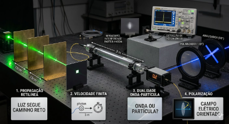
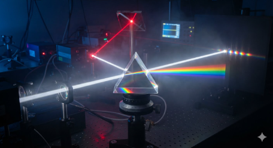
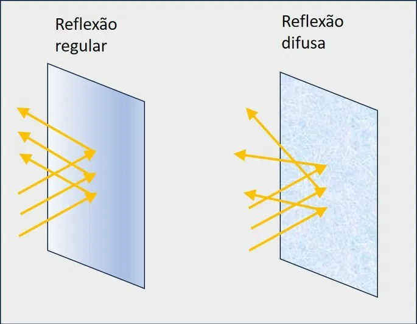
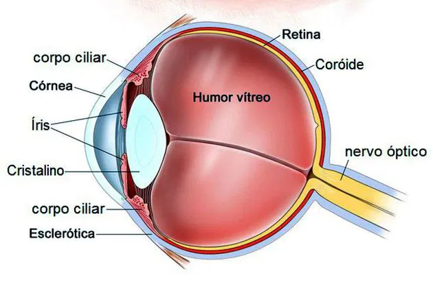

Lentes
As lentes alteram a direção da luz por refração para ajustar imagens. As convergentes aproximam os raios para ampliar a visão, enquanto as divergentes os afastam. São a base de óculos, câmeras e microscópios.
.png)
Propriedades da luz
A luz é uma onda eletromagnética que também pode se comportar como partícula. No vácuo, viaja a 3 × 10⁸ m/s e apresenta quatro fenômenos principais: reflexão, refração, absorção e dispersão.

Fenômenos da luz
A luz interage com o mundo de quatro formas: reflexão, refração, absorção e dispersão, que explicam fenômenos como espelhos, desvio da luz, cores e arco-íris.

Reflexão da luz
A reflexão ocorre quando a luz atinge uma superfície e retorna, mantendo o mesmo ângulo. É esse fenômeno que permite vermos imagens no espelho e objetos iluminados.

Óptica do ser humano
A luz entra pela córnea e pela pupila, passa pelo cristalino, que ajusta o foco, e chega à retina. A retina envia os sinais pelo nervo óptico ao cérebro, que interpreta a imagem e permite a visão.
